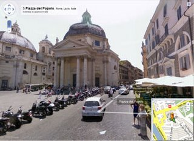
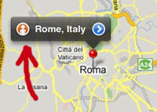

I'm constantly impressed by the fast pace at which Microsoft and Google are innovating in the mapping technology space. Some time ago I created a short video tutorial describing the two online services, then I blogged about how Google allows users to customize their maps and how Microsoft introduced bird's eye views of several cities in Italy. This time I'll talk about Google's street views. Imagine a car with a panoramic camera on its roof to capture thousands of pictures while it's circulating around a city. Now, link those images to Google maps and you can experience on your computer what a busy Italian street looks like in the reality. Google for now provides coverage only for Milan, Rome, Florence and the Lake Como area. Check some of these links, drag your pointer around to discover the surroundings and follow the arrows to move along the streets: - Piazza di Santa Croce in Florence - Piazza del Popolo in Rome - Piazza Castello in Milan - Piazza Roma in Arzegno (on Lake Como) If you own an iPhone, you'll be happy to know that Google street views are available for your mobile device too. For example, search for 'Rome' in the Google Maps iPhone application and click on the orange little man on the label:
and you'll magically experience what's like driving in Italy without time constrains. Now that you are "virtually ready" for Italy, consider the next steps to get "totally ready" for Italy. Download a free chapter of our eBook and start discovering more than 350+ tips that will help you navigate Italy like a local.